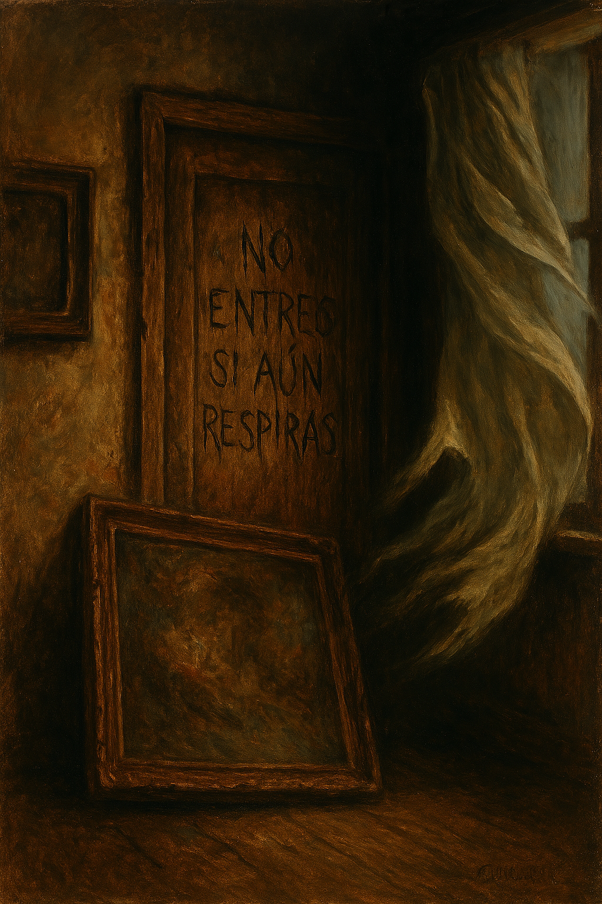

Luna and Mateo decided to climb the stairs. Each step creaked as if the building itself were breathing. On the upper floor, a narrow hallway stretched into the shadows, covered in old portraits. They all showed the same three children from different eras, but their faces were altered: their eyes had been gouged out.
The air smelled of dust and linseed oil. In the background, a frigid draft stirred a curtain, revealing a door hidden behind a fallen painting. Hand-carved into the wood were crooked, profound words: "DO NOT ENTER IF YOU STILL BREATH."
Inside, the floor was littered with broken clocks. In the center, a grandfather clock remained untouched, its hands reading 11:59. A dull whirring sound filled the air. The walls trembled. The clock began to emit a voice-like sound that seemed to emerge from within its gears, a mixture of whispers and breaths mingling with the wind.
The atmosphere became unbearable. The lanterns flickered. As soon as the clock struck midnight, a blue glow filled the room, and a humanoid face emerged from the shadows of the pendulum.